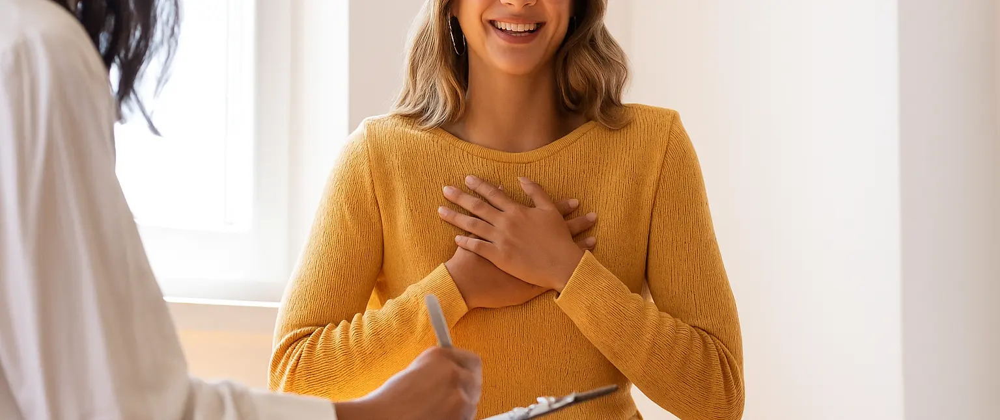
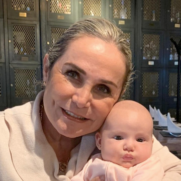
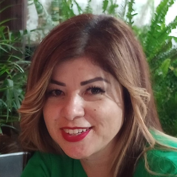

Encontrando bienestar emocional.
Agendar por WhatsApp
CATSE es: Salud Emocional
Somos un centro especializado en brindar acompañamiento profesional para recuperar el equilibrio y fortalecer la capacidad de "toma de decisiones" para los retos de la vida.
Algunos de Nuestros Servicios
Hipnosis Consciente
Técnica de recreación mental que usa recuerdos sensoriales para revivir experiencias personales del pasado. Busca liberar emociones negativas y dolorosas asociadas a esos momentos.
En ningún momento se pierde la voluntad propia; se está relajado y visualizando, pero siempre con la capacidad de controlar y dirigir el proceso.
Cortina de Agua
Proceso de limpieza emocional que permite reconocer y liberar emociones y creencias negativas del pasado.
Al reconocer lo que nos debilita, se construye un escenario positivo y el pasado queda solo como aprendizaje.
El resultado es mayor calma, seguridad y confianza para corregir errores y avanzar con libertad.
Taller dinámico para la preadolescencia y adolescencia.
Se fortalece la relación entre padres e hijos y se fomenta el interés y gusto por la vida escolar.
Busca ayudar a los niños de esta etapa (10 a 15 años) a desarrollar una actitud positiva hacia la vida escolar, mejorando su autoestima.
Testimonios

"Las cortinas de agua me ayudado a soltar carga emocional y a sentir más calma y claridad. La hipnosis consciente me ha permitido generar cambios en cómo me siento y así vivir la vida más agusto."

"Los ejercicios de hipnosis consciente me han servido mucho para calmar mi mente, aprender a relajarme, contactar con lo que hay en mi interior y así poder resolver situaciones específicas del pasado que me causaban dolor miedo o vergüenza aún en mi presente, lo cual me da esperanza. También me ayudan a contactar con un Poder Superior. ALTAMENTE RECOMENDADOS!!"
Acerca de "Genios"
Potenciamos las habilidades cognitivas y emocionales de forma innovadora para alcanzar el máximo potencial de los niños.
Descubrir más